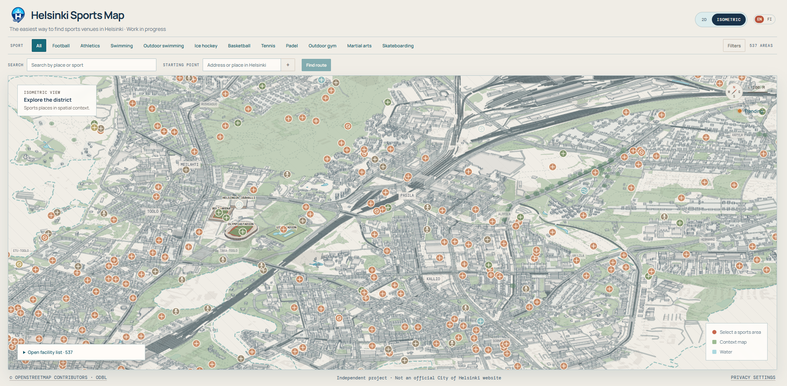

Product design · Work in progress
Helsinki Sports Map
An accessible sports discovery platform for Helsinki, powered by public data, a custom API and a reusable venue data pipeline.
The project brings places, activities and useful route information into a more understandable view of Helsinki.
- Role
- Product direction, UX/UI and data structure
- Context
- Helsinki · public data
- Status
- Work in progress
Sports options are difficult to discover in context.
People need more than a list of places: they need to understand where activities are, what is nearby and how the options fit together.
Product direction, data structure and interface work.
I am shaping the discovery experience alongside the public-data, API and reusable venue pipeline.
The map is being expanded toward wider Helsinki coverage.
The core direction is in place, but the product and venue data are still actively developing.

The question
How might a city-scale map make local sports opportunities easier to discover and compare?
My contribution
I am working across product framing, information structure, interface direction and the relationship between public data and user-facing discovery.
What is still open
The next decisions concern coverage, data quality, filtering and how much context a person needs before choosing a place or activity.
From places to decisions
The project is exploring how an isometric city view can help people understand sports venues in context instead of treating them as a flat list. The map is useful only if it helps someone answer a real question: what can I do, where, and what should I look at next?
Work in progress · Product and venue data actively developing